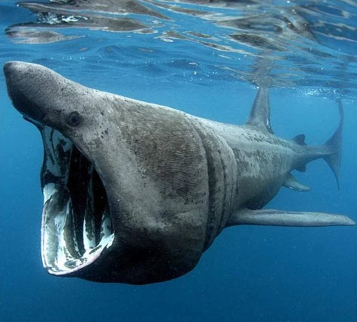
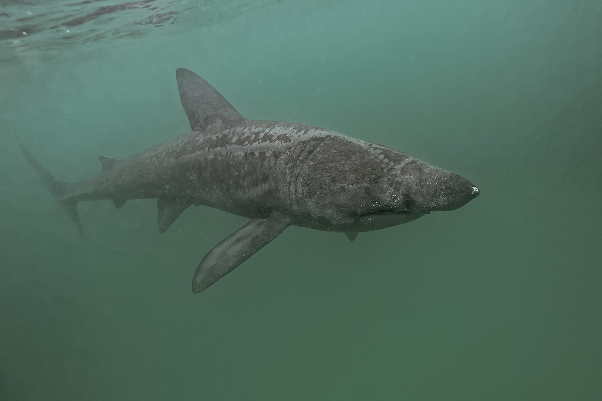

El tiburón peregrino (Cetorhinus maximus) es una especie de pez elasmobranquio lamniforme de la familia de los cetorínidos. Es el segundo pez más grande del mundo después del tiburón ballena y puede alcanzar los 10 metros de longitud y las cuatro toneladas de peso. Aunque su silueta desde la superficie puede recordar a la de un tiburón cazador, en realidad es inofensivo ya que se alimenta de plancton filtrando el agua. Nada la mayor parte del tiempo con la boca muy abierta, hasta hacerla casi redonda, con una natación lenta y continua, mientras filtra el agua con la ayuda de largas branquispinas. Divisados a menudo cerca de las costas, los peregrinos en algunos países son un objetivo frecuente de los ecoturistas, pues son vistos comúnmente en la superficie y además son muy tolerantes con la presencia del ser humano. Al igual que varias especies de tiburones, los peregrinos, especialmente por los factores anteriormente citados, fueron objeto de una intensa caza por parte de pescadores.Su enorme tamaño los convirtió en el pasado en animales altamente rentables para los barcos de pesca comercial; tan solo uno de ellos puede generar hasta una tonelada de carne y 400 litros de aceite, y su hígado se cree que es rico en vitaminas, puede representar hasta el 25% del peso total del animal. Por su gran persecución y explotación en el pasado, los tiburones peregrinos están ahora protegidos por ley en la mayoría de los países.
El tiburón peregrino es un animal que se alimenta pasivamente, filtrando a razón de 2000 toneladas de agua por hora e ingiriendo zooplancton, que incluye diversas especies de invertebrados y a veces pequeños peces. A diferencia del tiburón bocagrande (Megachasma pelagios) y del tiburón ballena (Rhincodon typus), el tiburón peregrino no parece buscar activamente su sustento, pero sí poseen grandes bulbos olfatorios que pueden orientarle en la dirección correcta. A diferencia de otros grandes filtradores de plancton, su método de alimentación consiste solo en introducir pasivamente el agua empujada a través de las branquias cuando nada, mientras que el bocagrande o el tiburón ballena puede absorber directamente el agua a través de sus branquias siguiendo cursos semipredeterminados.
El peregrino es un tiburón pelágico que suele visitar con frecuencia zonas costeras, pudiendo ser hallado a lo largo de todo el mundo, desde las áreas polares hasta océanos tropicales, principalmente en las superficies de las plataformas continentales si bien prefiere aguas frías, habitualmente entre los 8 y los 14 °C. Suele ser avistado en zonas próximas a las costas y es habitual que penetren en bahías y puertos. El tiburón peregrino busca su alimento entre grandes concentraciones de plancton en aguas poco profundas y suele ser frecuente verlo nadar cerca de la superficie. Son tiburones de costumbres migratorias, que recorren enormes distancias en el océano, siguiendo los cambios estacionales, aunque se ignora con exactitud las áreas que visita en sus largos desplazamientos ni si existen claros patrones en sus desplazamientos. En invierno pueden pasar largas temporadas cerca de los fondos marinos, a cientos o miles de metros de profundidad, buscando fuentes de alimento.
Posee un hocico cónico y numerosas branquiespinas grandes, modificadas para la alimentación por filtración. Su enorme boca se extiende más allá de los pequeños ojos y contiene numerosos dientes pequeños y ganchudos. El tiburón peregrino posee un hígado muy grande que representa hasta el 25% de su peso corporal.
El tiburón peregrino también está clasificado actualmente como "Vulnerable" en toda su área de distribución y "En Peligro" en las regiones del Atlántico Nororiental y el Pacífico Norte por la Unión Mundial para la Naturaleza (UICN).